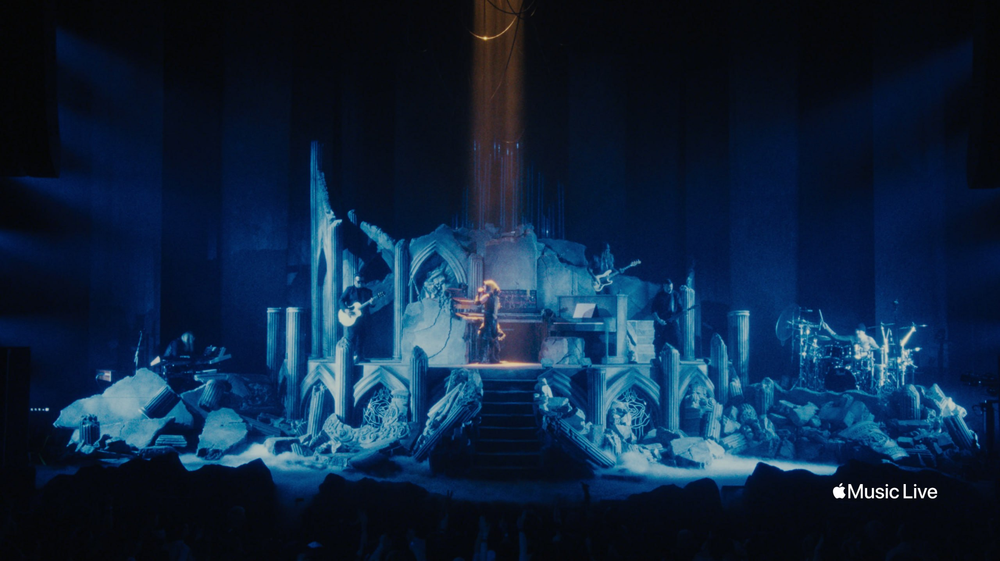
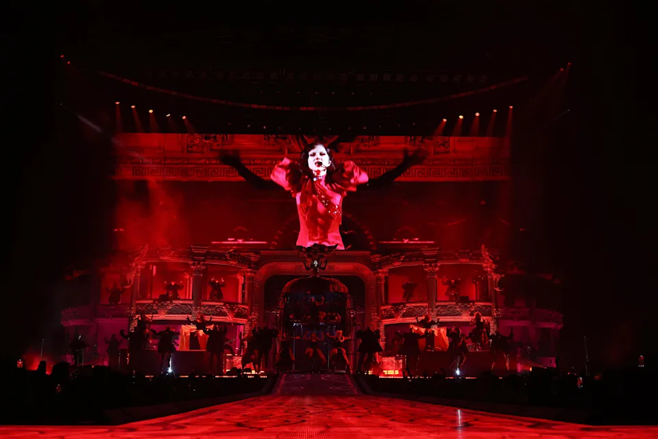
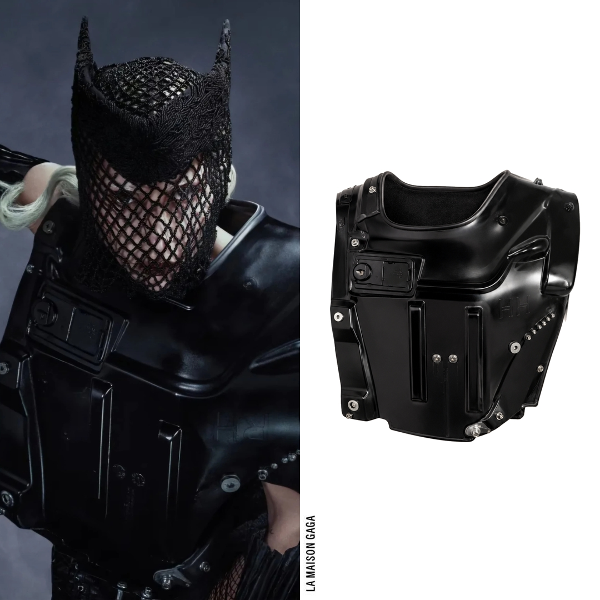
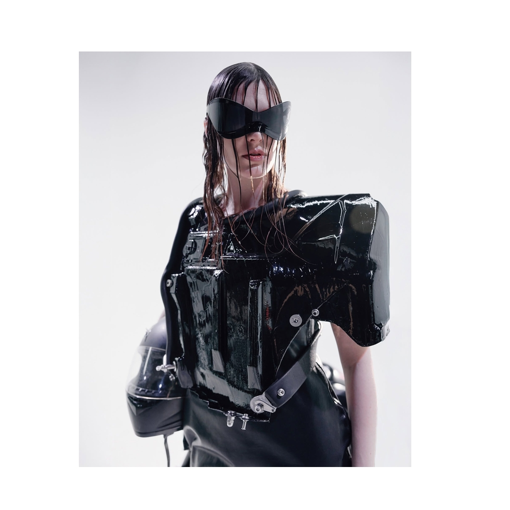
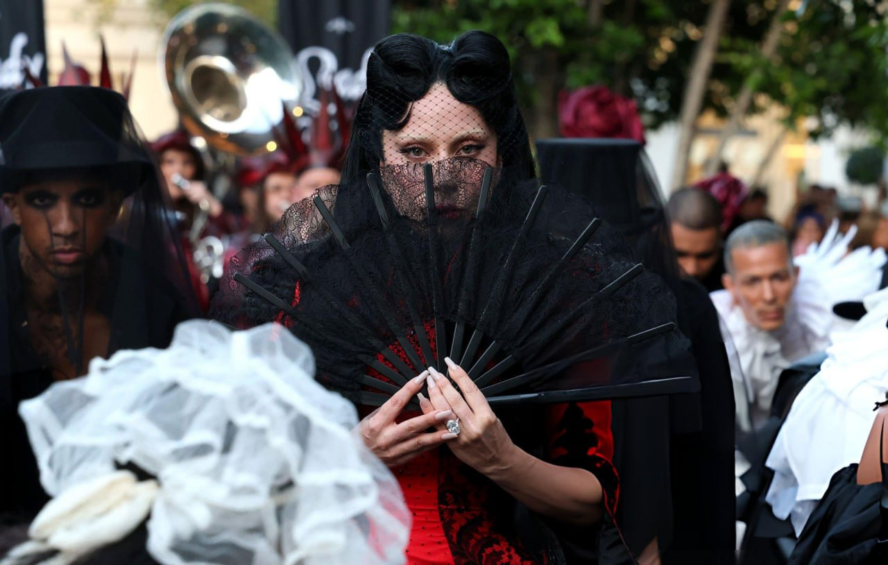

Mayhem Requiem surge como uma lembrança distante, quase um eco perdido no tempo. A obra se passa 1000 anos após a era Mayhem, quando tudo o que restou daquele período virou memória e mito. O palco do espetáculo representa os escombros da antiga Mayhem Ball, agora tomados pelo silêncio e pelo tempo, como ruínas de algo que um dia foi grandioso. Nesse cenário, entre passado e futuro, Lady Gaga reaparece como uma presença simbólica — não apenas uma artista, mas uma ideia que resiste e se transforma, recriando sua própria história através da música, da imagem e da emoção.

A Mayhem Ball Tour foi um dos momentos mais intensos da fase Mayhem, marcada por uma produção grandiosa e totalmente teatral. A turnê apostava em um conceito visual caótico e sofisticado ao mesmo tempo, onde cada show parecia uma experiência diferente, quase como um universo próprio sendo construído no palco. O espetáculo tem como uma de suas principais referências musicais O Fantasma da Ópera.

No universo de Mayhem Requiem, a estética também se conecta a esse lado mais industrial e conceitual da moda de Lady Gaga. Em um dos looks do espetáculo, ela surge vestida por Selva Huygens, designer conhecida por trabalhar com peças automotivas reais, transformando partes de carros em estruturas de roupa. A proposta reforça essa fusão entre corpo, máquina e arte, como se a própria figura da artista fosse reconstruída a partir de fragmentos de um mundo antigo e mecânico, dentro da atmosfera futurista do show.


Mayhem Requiem não representa um fim, mas um processo de reinvenção constante. Entre escombros e vestígios do passado, o espetáculo transforma ruína em criação. Nesse universo, novas formas só surgem quando outras se desfazem, abrindo espaço para que o caos dê origem a algo completamente novo.

Todos os direitos reservados